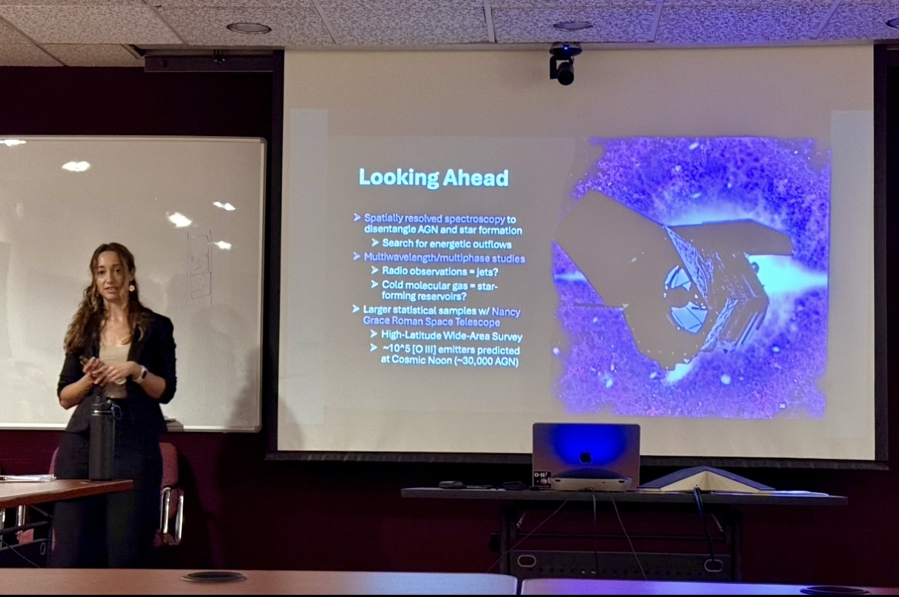

JULY 2026 PhD Defense
Revealing the AGN–Host Galaxy Connection: A JWST View of Ionized Gas at the Peak of Galaxy Formation
Steward Observatory · Tucson, Arizona

Sharing research on black holes and galaxy evolution with scientific and public audiences.
JULY 2026 PhD Defense
Steward Observatory · Tucson, Arizona

JAN 2026
AAS 247th Winter Meeting · Phoenix, Arizona
Also presented by invitation at a JWST extragalactic group meeting
MAY 2025
FLASH Talk Series, NOIRLab · Tucson, Arizona
OCT 2024
Steward Symposium · Tucson, Arizona
OCT 2024
Dep24: Beyond the Edge of the Universe · Sintra, Portugal
How supermassive black holes influence the galaxies around them.
Watch on YouTubeInvestigating why galaxies eventually stop forming new stars.
Watch on YouTube